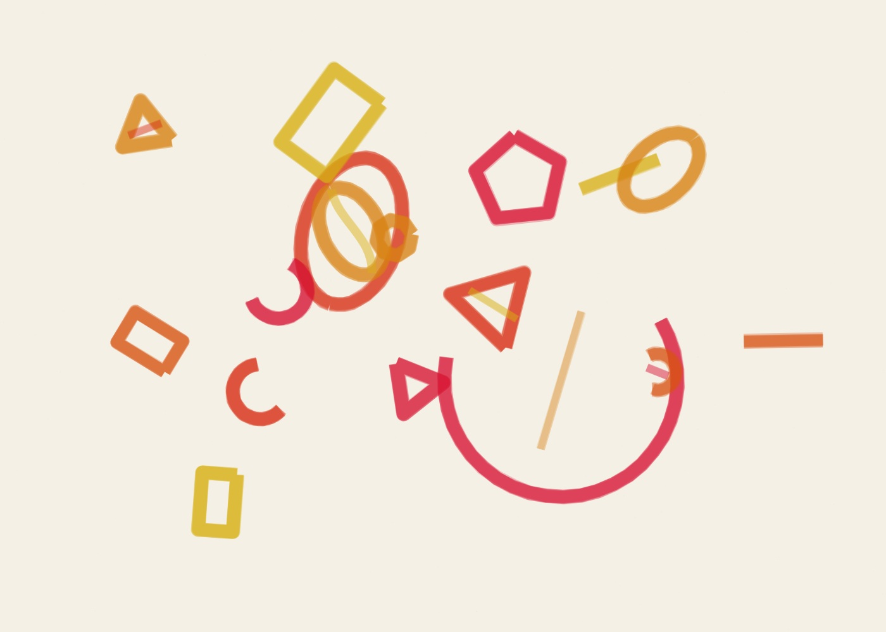
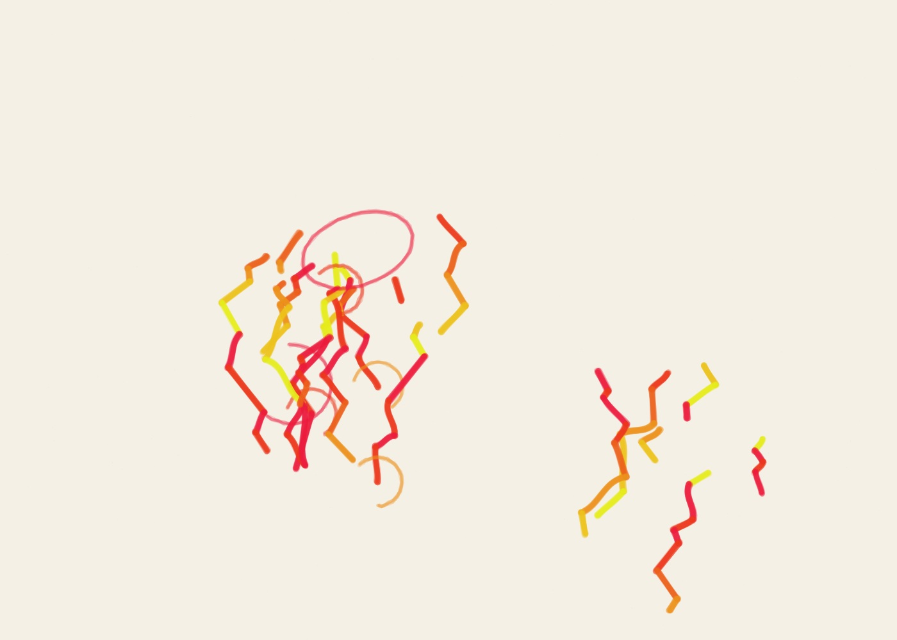
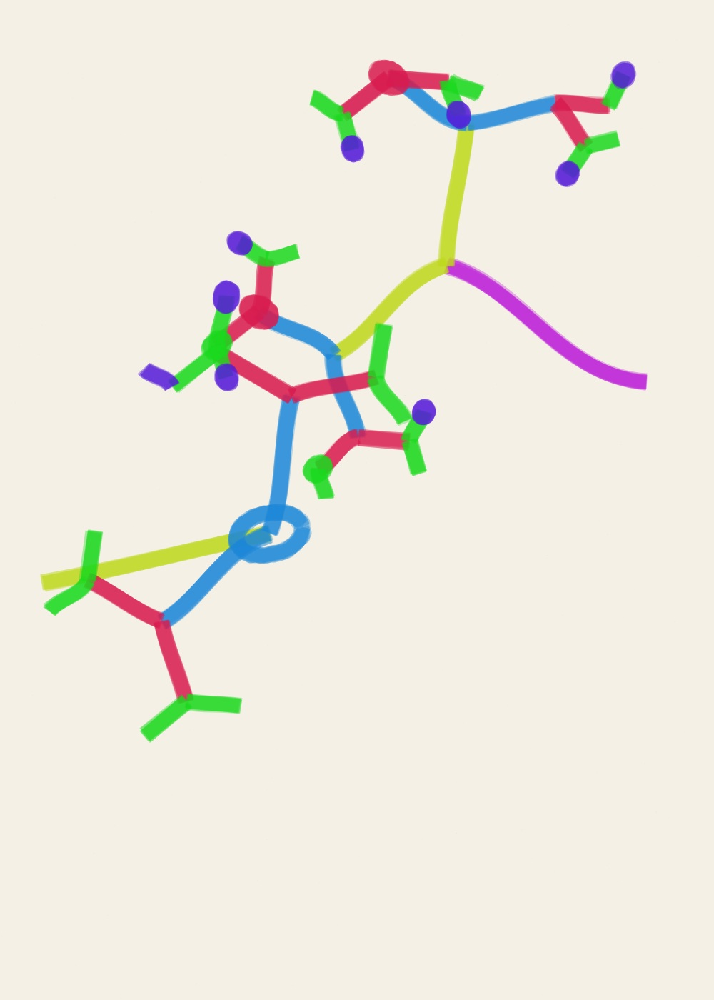
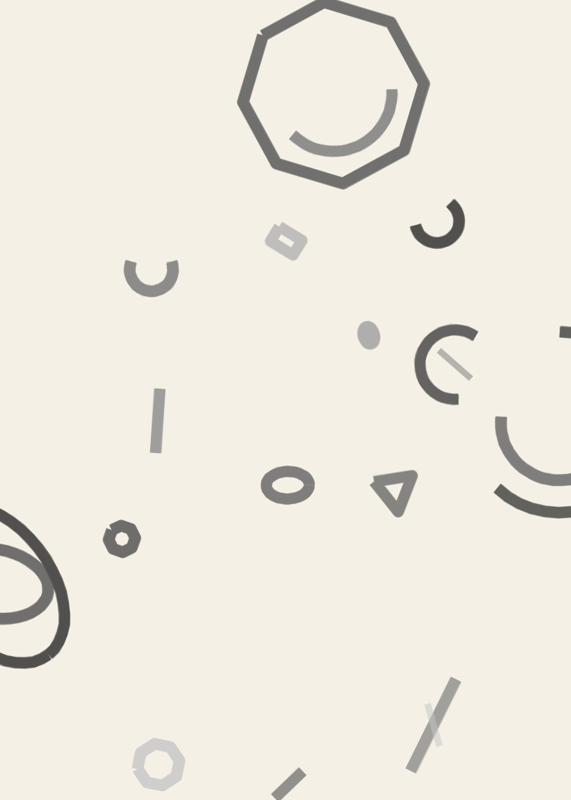

01
Constructed Forms · Marker
- Seed
- AA-20261107-01-60842
- Series
- Constructed Forms
- Format
- Landscape · 1400 × 1000
- Additional φ pull
- 84%
- Material
- Marker
- Palette
- warm
Can one number compose a drawing?
4 drawings made on 7 November 2026. Different materials, different compositions, and room to make each one your own.




The golden ratio helps arrange each drawing. The material changes how those arrangements feel. Open a piece to see its settings, then change whatever you like.
MAKE YOUR OWN →